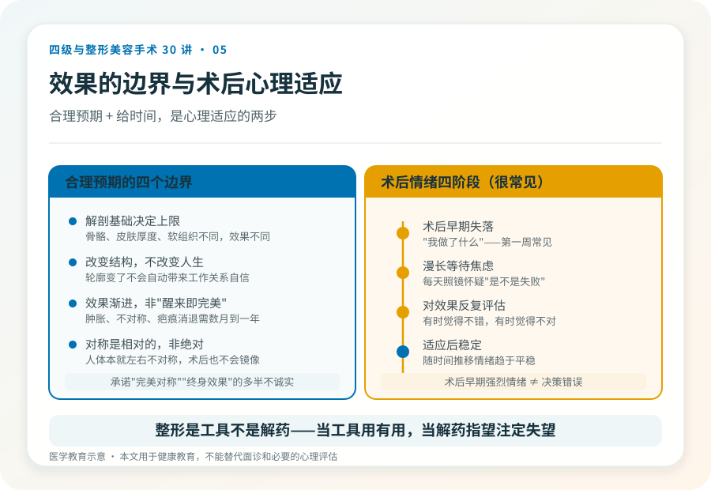

先说结论：整形手术（尤其四级手术）的心理考验，不只在手术台上，而是贯穿术前决策、术后等待和长期适应的全过程。最影响满意度的往往不是技术，而是预期是否合理、心理是否准备好、术后能否平稳适应。这一篇把“想清楚再做”和“做完好好适应”合起来讲，因为它们是同一件事的两面。
第一阶段，术前决策，先问自己五个问题
在面诊之前，安静地回答这五个问题，比看一百张案例图更有用：
- 我的诉求是具体的结构问题，还是笼统的“不自信”？ 手术解决结构问题，解决不了人生困境。
- 如果效果只达到预期的一半，我还能接受吗？ 不能接受，说明预期本身可能过高。
- 我能承受多长的恢复期、多大的疤痕、可能的并发症和二次手术？ 这是承受力的真实底线。
- 这是我自己想做的决定，还是为了某段关系、某个场合、某种压力？ 为他人而做的不可逆手术，事后容易后悔。
- 如果今天不做，半年后我会怎样？ 如果答案影响不大，说明并不紧迫，值得再缓一缓。
这五个问题不是劝你不做，而是帮你分清“想做”和“该做”。
第二阶段，理解手术效果的边界
合理预期建立在理解这几个边界之上：
- 解剖基础决定上限。同样的术式，在不同骨骼、皮肤厚度、软组织条件下效果不同。案例图是别人的解剖，不能直接套到自己身上。
- 手术改变结构，不改变气质和人生。轮廓变了，不会自动带来工作、关系或自信的根本改变。
- 效果是渐进的，不是“醒来看镜子就完美”。术后肿胀、不对称、疤痕都需要时间消退，最终稳定可能要半年到一年。
- 对称是相对的，不是绝对的。人体本就左右不对称，术后也不会是镜像完美。
把这几个边界讲清楚的医生，比承诺“完美对称”“终身效果”的医生更值得信任，后者要么不诚实，要么对你的解剖没有真正评估。
哪些情况建议先缓一缓
- 正在经历重大生活变故（分手、失业、丧亲、严重冲突），情绪不稳定时做的不可逆决定，事后后悔率高。
- 对效果抱有“换脸式”期待，认为手术能解决外貌以外的问题。
- 未成年人，或对自身外貌判断尚不稳定的年轻人，尤其涉及不可逆的骨性手术。
- 存在体象障碍倾向，对微小的外貌缺陷过度关注、反复手术仍不满意。这种情况需要的是心理评估，而不是更多手术。
- 短期内频繁更换“想做的项目”，没有稳定的诉求。
这些不是道德判断，而是降低不可逆后悔的现实考量。在以上情境下，先咨询心理专业人士或推迟决策，往往是更负责任的选择。
把“可接受的最坏情况”想清楚
四级手术的并发症虽然不常见，但一旦发生可能较重：出血、感染、神经损伤、不对称、骨不愈合、植入物问题、需要二次手术。术前问自己：如果出现这些情况，我有时间、预算和心理资源去应对吗？如果答案是“完全承受不了”，那这台手术对你就不是合适的选择，无论技术多好。
愿意和你认真讨论最坏情况的医生和机构，比回避这个话题的更安全。
第三阶段，术后心理适应，熬过那段“后悔期”
手术结束才是心理考验的开始。很多人术后会经历类似的情绪阶段，这些都是常见的，不是你“心理有问题”：
- 术后早期的失落：看到肿胀、淤青、不像自己的脸，会产生“我做了什么”的冲击。这种反应在术后第一周很常见。
- 漫长的等待焦虑：恢复需要时间，每天照镜子看不到明显改善，会怀疑“是不是失败了”。
- 对效果的反复评估：有时觉得不错，有时觉得不对，情绪随镜中影像起伏。
- 适应后的稳定：随时间推移，多数人会逐渐适应新外观，情绪趋于平稳。
理解这个过程的意义在于：术后早期的强烈情绪不等于决策错误。给它时间，是心理适应的第一步。
恢复期的几个现实
- 肿胀消退需要时间：面部手术的明显肿胀可能持续数周，完全消退到最终效果可能数月到一年。
- 不对称是过程性的：术后早期左右不对称很多是肿胀不均所致，随恢复会改善。
- 疤痕会经历变化：发红、增生、变淡，整个过程可能一年以上。
- 效果是渐进显现的：不是“拆线即定型”。
了解这些，能让你在恢复期不至于把正常的阶段性表现误判为失败。
两端的心理落差
术后心理落差常落在两端：
- “为什么没变化”：期待大幅改变，结果只感到微妙差异。多见于保守的术式或预期过高。
- “变化太大，不像自己”：明显的改变带来身份认同冲击。多见于颌面等改变轮廓的手术，需要数月适应。
这两种落差都说明术前的预期管理有多重要。把期待建立在“改善具体问题”而非“换个人生”上，术后适应会平稳得多。
他人的反应与自我接纳
术后他人的反应可能带来压力：被看穿或评论的担忧、亲近的人不理解。应对建议：你没有义务向所有人解释。对亲近的人可以提前沟通；对无关的人，模糊回应是合理的。
更重要的是自我接纳与“够了”的认知：改善到合理程度就停下来，而不是永远追求“再好一点”。反复“再修一点”可能滑向过度整形和不满足。整形是工具，不是解药，把它当工具用，它有用；把它当解药指望，几乎注定失望。
如果发现自己陷入“永远不满意”“总想再改”，这可能是心理信号（如体象障碍倾向），需要的不是更多手术，而是专业心理评估和支持。
什么时候需要寻求心理支持
出现以下情况，建议寻求心理专业人士的帮助：
- 术后长时间（数月）情绪低落、焦虑，影响日常生活。
- 对效果持续强烈不满，反复要求修整但医生认为无必要。
- 对外貌的某个细节过度关注，影响社交、工作。
- 出现回避社交、自我封闭。
- 有自伤或绝望念头（这种情况需要立即寻求帮助）。
寻求心理支持不是软弱，而是对自己负责。整形决策涉及身体形象和心理状态，心理专业人士的介入是合理且有益的。
一个实用建议，写决策与恢复日记
从第一次面诊到术后恢复，用一段时间记录：每天的感受、有没有动摇、外界影响了什么、恢复的进展。回头读这份记录，能帮你区分“经过冷静思考的决定”和“被某次面诊或优惠推动的冲动”，也能在术后焦虑时看到恢复的真实轨迹。四级手术值得这样的耐心。
本文用于健康教育，不能替代面诊和必要的心理评估。